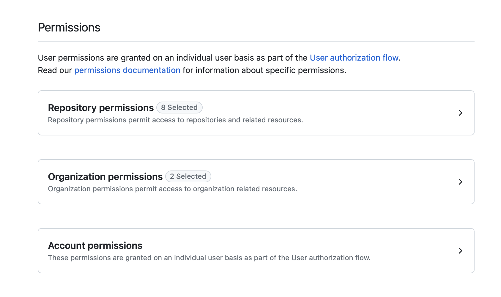
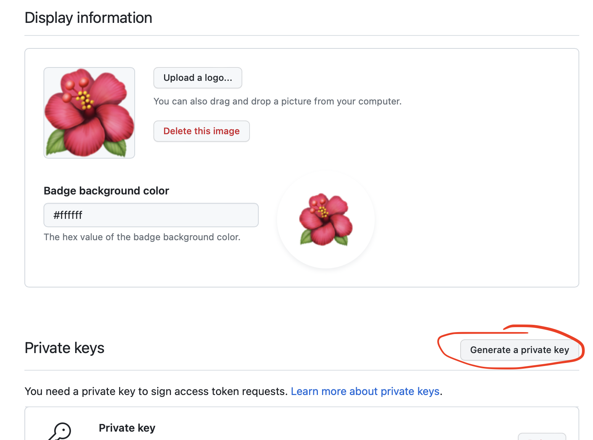

Set-up & deployment
This guide will take you through the basic set up and deployment for FlowEHR in your environment.
1 Get the repositories
Repositories: 1. FlowEHR-Data-Pot - fork or clone this repo. Data source deployments (Example data pipeline) - can use Satellite for synthetic EMAP star schema 2. FlowEHR - this a template repo so you create your own repo from the template and customise it to your institution. 3. Powershell-Scripts - allows VM Customisations of windows VMs 4. Model-Seedling - starting point for a new Data Science project 5. Dash-Seedling - used for creating Dash web apps 6. AzureTRE-Deployment - FlowEHR Azure TRE deployment, linking the AzureTRE with flowEHR and custom data sources 7. Azure-Bootstrap - Utility for bootstrapping common Azure resources needed to store Terraform state, containers and configure build agents, used in CI.
2 Core configuration
Make sure VS code dev container extension is updated.
Dev subscription access: - On the azure portal you may not be able to access apps when you sign in via your NHS account. However, if you click on your username in the top right and go to switch directory then you can switch to your institution’s subscription e.g. UCLH DIF in the directories and subscription page. - For local deployments, use the sub-uclhdif-sandbox subscription.
Policies and Reading: - read Book-of-FlowEHR policies - in particular resource naming to get an idea of resource naming conventions
- FlowEHR-Data-Sources:
- Connects to Satellite (with synthetic/fake data using EMAP star schema) or real EMAP data.
make deploybasically does aterragrunt run-all apply(terragrunt is a thin wrapper around Terraform that provides extra tools for keeping Terraform configurations DRY - Don’t Repeat Yourself)- Understand descriptions of each of the TF_VAR_… envs are in variables.tf
- Take note of address-spaces when allocating address spaces - see available addresses. Will need to find address space by the using the cidr converter to list addresses within the IP range i.e. the available addresses.
- Look at terraform variable
informdb_pat- where do you get it? It’s a personal access token that can clone the private repo Inform-DB which defines the EMAP star schema. Satellite is a Python package for creating and populating an EMAP star schema with completely synthetic/fake data.
- UCLH-FlowEHR:
- Uses FlowEHR-Data-Sources and the FlowEHR-Data-Forge which coverts e.g. NHS data into usable patient related features using Azure Databricks
- set the
core_address_spaceaccording to the book of flowEHR address spaces - should be different from data-sources address - make sure to comment out
private_dns_zones_rgand setaccesses_real_datato false (since we are using synthetic/fake data) - Use the output from flowEHR data sources to create a data source in
data_source_connectionsi.e. refer to the resource group created in the previous data sources step- In the Azure portal, look at the keyvault that was created by the flowEHR data sources for the
database,username(consumer username) andpassword(consumer password) - If terraform hasn’t provided access then find out your ip address and add it to the IP addresses allowed in the networking section
- In the Azure portal, look at the keyvault that was created by the flowEHR data sources for the
- For the transform section, have a single repository that points to
https://github.com/UCLH-Foundry/FlowEHR-Data-Forge.git - The
shacan be found in theconfig.yamlfile - For the serve block, use the existing application in UCLH-FlowEHR-TestBed:
github_owner: UCLH-FlowEHR-TestBed github_app_id: 309047 github_app_installation_id: 35581991- for monitoring you can add your nhs email to the
alert_recipientsand updated the_locationin thenetwork_watchername to be_uksouth
CI/CD instructions
3 Infrastructure deployment
Before running the Makefiles in each repo: - az login --tenant <Tenant ID> which you can find on the Azure Portal - az account set --subscription <Subscription Name> - az account show to check in correct subscription
make deploy- keep note of the printing of connection details for use later- One resource group is created in this step.
- Error fixes:
- A common error is “ERROR: deleting subnet…” which seems to occur because a subnet already exists that is using the same address space so shouldn’t be deleted. Therefore, change the address space
make all- To deploy all infrastructure, and any configured pipelines and appsmake infrastructure- Alternatively, if you just want to deploy the infrastructure- Two resource groups are created in this step.
- Error fixes:
- Re-run
make all - Manually delete resource group on Azure Portal
- In keyvaults - manage deleted keys and purge keyvault
make cleanshould be updated (delete .tfstate terraform)- Re-run
make allfresh
- Re-run
CI/CD instructions
4 Setting up App & Model Serving
Now we have our core infrastructure deployed, we can proceed to set up the app serving layer so it’s ready to deploy and host our FlowEHR Apps.
4.1 Configure a GitHub App
For FlowEHR to create and manage repositories in GitHub for hosting FlowEHR App code, it requires a GitHub App to authenticate.
We recommend creating a new GitHub Organization for containing all of the FlowEHR App repositories that will be created and managed by your FlowEHR instance - just so you’re not providing unnecessary management access to any other repositories you might have in your main org.
4.1.1 Create GH app
Once you have the organisation you wish to use at the ready, follow these instructions to create a new GitHub App within the organisation you wish to host your new FlowEHR apps, with the following properties (leave everything else blank/default):
Name: {YOUR_ORG}-FlowEHR # or something similar (needs to be globally unique)
Homepage URL: https://flowehr.io
Webhook: uncheck
Permissions:
Repository Permissions:
- Actions: Read-only
- Administration: Read and write
- Contents: Read and write
- Environments: Read and write
- Metadata: Read-only
- Secrets: Read and write
- Variables: Read and write
- Workflows: Read and write
Organization Permissions:
- Administration: Read and write
- Members: Read and write
Where can this GitHub App be installed?: Only on this account
When happy, click Create GitHub App. After creation, in your app’s settings page, note down the App Id.
4.1.2 Generate Private Key
In the app settings page, scroll down to near the bottom and find the Private Keys section. Click Generate a private key. This will download a PEM cert file to your machine. We’ll need this later.

4.1.3 Install GH app
Once created, you need to the install the app to the organisation. Follow these instructions, selecting your organization and choosing All repositories.
After installation, stay on the same page and check the URL. It should look like this:
https://github.com/organizations/UCLH-FlowEHR-TestBed/settings/installations/35581991
At the end of the URL after installations/, you’ll see a number (35581991 in the example above). Record this down - it is your GitHub App Installation Id. (Believe it or not this is the easiest way to find it!)
4.1.4 Update config
Depending on whether you’re configuring this for a local dev deployment, or for CI (or both if you’d like local developers and your testing environments to share a single Organization for test apps) - update the relevant config.yaml or config.{ENVIRONMENT}.yaml with the GitHub app details in the serve block:
serve:
github_owner: name of the GitHub Organisation you created/wish to use for deploying apps into
github_app_id: your GitHub App's "App Id" from earlier
github_app_installation_id: your GitHub App's "Installation Id" from earlier4.1.5 Store the cert
For developing locally, simply find the PEM file you downloaded earlier, rename it to github.pem and drag it into this repo under the /apps directory. It will be picked up by Terraform during deployment, and is gitignored so won’t be checked in accidentally.
For other developers who want to use this same app instead of setting up their own, direct them to create and download their own private key from the GitHub App’s settings page as you did in a previous step.
For use in CI, copy the contents of the PEM file, and paste it into a new GitHub secret called GH_APP_CERT. The CI/CD pipeline will read this into a file to use during deployments.
That’s it for now! We’ll need all this when we come to deploying apps (which we’ll cover in the deployment section).